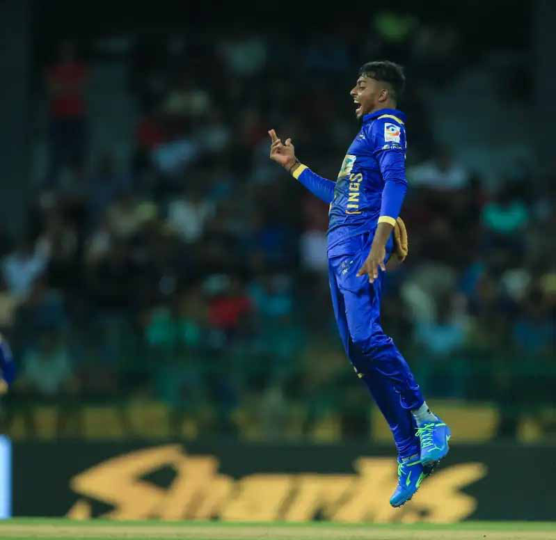
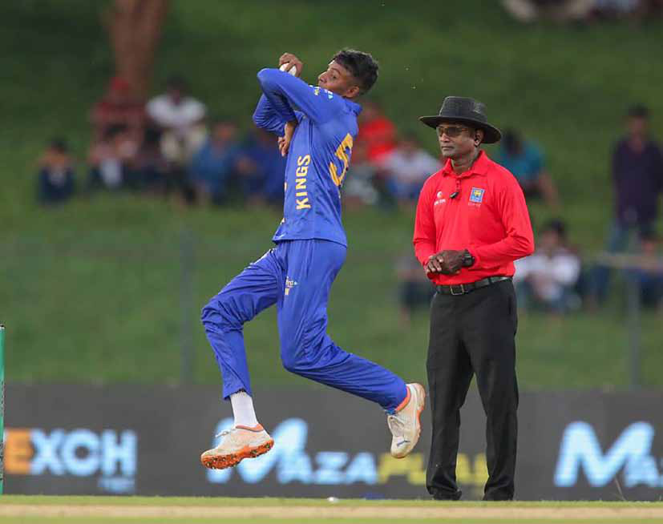

Who else, along with your uncle Prabhakaran, are you planning to commemorate?
Who else, along with your uncle Prabhakaran, are you planning to commemorate?
Jaffna Monitor hellojaffnamonitor@gmail.com 12 Who else, along with your uncle Prabhakaran, are you planning to commemorate? We will remember Uncle Prabhakaran, Aunt Mathivathani, younger Brother Charles Anthony, sister Thuvaraga, and youngest Brother Balachandran. When will this be? I am unable to provide an answer right now. I will inform you very soon. We've heard that Prabhakaran didn't believe in God. How do you plan to commemorate him according to religious practices? The perception that my uncle did not believe in God is not entirely accurate. The Uncle Prabhakaran I knew did, in fact, have faith in God. Our family background is steeped in religious devotion; our ancestors were instrumental in building a Shiva temple in Valvettithurai, which is a testament to our spiritual heritage. Specifically, my uncle Prabhakaran was a devotee of Lord Murugan. In honouring his memory, the memorial we plan to conduct will be a private affair deeply rooted in our family's religious beliefs and practices. While the ceremony will be personal and reflect our devotion, we are also mindful of the broader community. We intend to ensure that the memorial is respectful and sensitive, acknowledging the feelings and beliefs of others. The involvement of the public will be considered in a manner that aligns with our family's wishes and the solemn nature of the occasion. Our aim is to create a space of reverence and respect, honouring my uncle's memory in a way that is true to our family's spiritual values. Could you explain the motivation behind the decision, especially after a span of 14 years? The decision to commemorate Uncle Prabhakaran and his family publicly stems from a pressing need to counteract certain groups' inappropriate and unfortunate exploitation of their names for financial gain. These individuals have been using the legacy of my uncle and his family for their own benefit, which has necessitated a response from us, not only to uphold their dignity but also to conclusively dispel the false narratives that they are still alive. My uncle and his family achieved martyrdom. By organizing this event, we aim to firmly underline this truth and to bring closure to these unfounded claims. Additionally, this commemoration serves a deeper, more solemn purpose. It is an occasion for us to seek peace for their departed souls. Has there been any private commemoration of them by your family in the past? Yes, my parents have been conducting private commemorations annually. These observances are not aligned with a specific date on the English calendar but follow the Tamil Thithi corresponding to the date of Uncle Prabhakaran's passing on May 18, 2009. This involves a day of fasting and the preparation of a vegetarian meal at noon, practices in which we all partake. However, we have decided to extend these commemorations to a public forum this year.
Jaffna Monitor hellojaffnamonitor@gmail.com 13 O n December 4th, 2020, a teenager a few days shy of his 19th birthday is up against Angelo Mathews, the last man standing from Sri Lanka's golden generation. On his debut, the teenager bravely tosses the ball up in the air. Not requiring a second invitation, Mathews attempts to clear the long-off boundary. However, the ball hits the edge of the bat and lands safely in the hands of the long-off fielder. The youngster is elated, and so too are his team and supporters. Fast forward to February 17th, 2024; three years later, the youngster is at it again. This time, however, he's not in an By: Dr. Aravinthan Arunthavanathan Sports Viyaskanth: More than an inspiration


Jaffna Monitor hellojaffnamonitor@gmail.com 14 empty Hambantota but in the bustling Dubai International Cricket Stadium. Representing MI Emirates, a subsidiary of one of the world's most powerful and dominant cricket franchises, he showcases his talent. Delivering an economical performance and featuring among the wicket-takers, he stands out even amidst a galaxy of stars, winning the 'Dressing Room Player of the Match' award. Remarkably, this isn't his first, but his third such recognition within a week. This isn't just the Jaffna Kings; it's a conclave of global superstars. What an incredible journey it has been for him. You might think the youngster has truly made his mark, but has he really? In the world of cricket, where players like Natarajans and Shamar Josephs rise to the top within months, Vijayakanth Viyaskanth's journey may seem painstakingly slow. Perhaps it is, especially since he hasn't yet made a significant impact in the domestic circuit. This can be frustrating, but in reality, it might be the best thing for him. Viyas is seen as the boy who broke the invisible barrier preventing players from outside major cities from playing for Sri Lanka. He rose to prominence on merit, thanks to a considerate franchise, the Jaffna Stallions, known for their passion and long-term

Jaffna Monitor hellojaffnamonitor@gmail.com 15 commitment to nurturing talent. He became a symbol of hope, not just for the Stallions but for all of Sri Lanka's remote regions. It's natural to expect such a beacon of hope to quickly ascend to national colours and complete a success story. However, Viyas's gradual progress could be more beneficial for him and the country in the long run. Doubt this approach? Then, consider the case of Yasaswi Jaiswal, India's newest sensation. His journey, marked by a grind through Ranji Trophy games and dominance there, shaped him into the player he is today. With expectations soaring, pressure will engulf Viyas. He has set his own benchmark now. Technically, he is some distance away from being a fully developed player. However, every single time he has reappeared on the biggest stage, he has shown tremendous improvement. Till a few days ago, Viyas's signature was his inspirational story. But after his showing at the ILT20, it's his skill. He will not celebrated for the journey he has come but will be gauged on the competence he displays. The mere fact that MI Emirates backed him to be part of their lineup for the final is proof of the same. The journey will become tougher, competition will decode him and try to flatten him, mouths that praise will criticise, expectations will transform into pressure, and narratives will become different. As anyone who has travelled the journey will testify, it will be a whole new game. Would Viyas sustain himself? All signs indicate that he surely will succeed. Despite the adulation and exposure on the biggest stage, Viyas appears to remain grounded. How he continues to maintain this composure will be crucial in deciding his fate. For the sake of many who dream of following in his footsteps, we should hope and pray that he continues to forge a path for others to emulate, reaching ever higher. For now, the signs are good. As fans, it might be tempting to see him in national colours soon. But as Mahela mentioned in the post-match interview following the ILT20 final, it's time for Viyas to prove his prowess on the domestic circuit. Luckily for Viyas, unlike many in the past, he has found himself in the right places at the right times, and with exposure to the Mumbai Indians, it's hard to miss the eyeballs if he keeps improving as he has been. His showing on the biggest franchise stages will surely pave the way for the ultimate destination. While he will surely have to break the door open to get selected for the national team, the good news is he has the most advanced tools through franchise cricket to do so. His time will surely come; until then, let's enjoy his journey and allow him to enjoy the journey without putting on unwanted pressure. Go well, Viyas. You are an inspiration, but you should be much, much more than that, and hopefully, you will be!